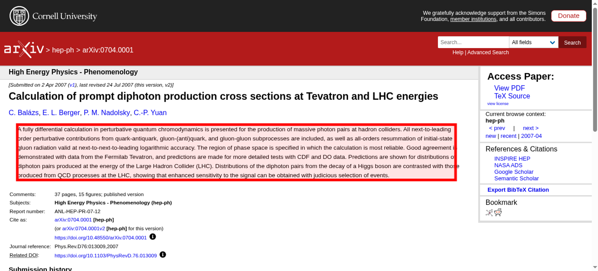
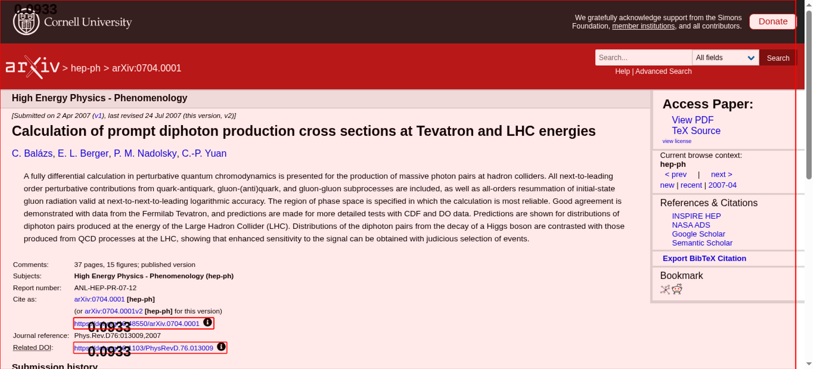

Tested 2025-11-15 02:39:21 using Chrome 141.0.7390.107 (runtime settings).
| Metric | Value |
|---|---|
| Page metrics | |
| Performance score | 90 |
| Total page size | 395.6 KB |
| Requests | 34 |
| Timing metrics | |
| TTFB | 89 ms |
| First Paint | 256 ms |
| Fully Loaded | 2.484 s |
| Google Web Vitals | |
| TTFB | 89 ms |
| First Contentful Paint (FCP) | 256 ms |
| Largest Contentful Paint (LCP) | 256 ms |
| Cumulative Layout Shift (CLS) | 0.09 |
| Visual Metrics | |
| First Visual Change | 266 ms |
| Speed Index | 266 ms |
| Visual Complete 85% | 266 ms |
| Visual Complete 99% | 266 ms |
| Last Visual Change | 266 ms |
Choose HAR:
Use--filmstrip.showAll to show all filmstrips.
The coach helps you find performance problems on your web page using web performance best practice rules. And gives you advice on privacy and best practices. Tested using Coach-core version 8.1.3.

| Title | Advice | Score | ||||||
|---|---|---|---|---|---|---|---|---|
| Don't scale images in the browser (avoidScalingImages) | The page has 1 image that are scaled more than 100 pixels. It would be better if those images are sent so the browser don't need to scale them. | 90 | ||||||
| Description: It's easy to scale images in the browser and make sure they look good in different devices, however that is bad for performance! Scaling images in the browser takes extra CPU time and will hurt performance on mobile. And the user will download extra kilobytes (sometimes megabytes) of data that could be avoided. Don't do that, make sure you create multiple version of the same image server-side and serve the appropriate one. | ||||||||
| Offenders: | ||||||||
| Do not load specific print stylesheets. (cssPrint) | The page has 1 print stylesheet. You should include that stylesheet using @media type print instead. | 90 | ||||||
| Description: Loading a specific stylesheet for printing slows down the page, even though it is not used. You can include the print styles inside your other CSS file(s) just by using an @media query targeting type print. | ||||||||
| Offenders: | ||||||||
| Inline CSS for faster first render (inlineCss) | The page has both inline CSS and CSS requests even though it uses a HTTP/2-ish connection. If you have many users on slow connections, it can be better to only inline the CSS. Run your own tests and check the waterfall graph to see what happens. | 95 | ||||||
| Description: In the early days of the Internet, inlining CSS was one of the ugliest things you can do. That has changed if you want your page to start rendering fast for your user. Always inline the critical CSS when you use HTTP/1 and HTTP/2 (avoid doing CSS requests that block rendering) and lazy load and cache the rest of the CSS. It is a little more complicated when using HTTP/2. Does your server support HTTP push? Then maybe that can help. Do you have a lot of users on a slow connection and are serving large chunks of HTML? Then it could be better to use the inline technique, becasue some servers always prioritize HTML content over CSS so the user needs to download the HTML first, before the CSS is downloaded. | ||||||||
| Avoid Frontend single point of failures (spof) | The page has 5 requests inside of the head that can cause a SPOF (single point of failure). Load them asynchronously or move them outside of the document head. | 70 | ||||||
| Description: A page can be stopped from loading in the browser if a single JavaScript, CSS, and in some cases a font, couldn't be fetched or is loading really slowly (the white screen of death). That is a scenario you really want to avoid. Never load 3rd-party components synchronously inside of the head tag. | ||||||||
| Offenders: | ||||||||
| Avoid extra requests by setting cache headers (cacheHeaders) | The page has 1 request that are missing a cache time. Configure a cache time so the browser doesn't need to download them every time. It will save 270 B the next access. | 90 | ||||||
| Description: The easiest way to make your page fast is to avoid doing requests to the server. Setting a cache header on your server response will tell the browser that it doesn't need to download the asset again during the configured cache time! Always try to set a cache time if the content doesn't change for every request. | ||||||||
| Offenders: | ||||||||
| Long cache headers is good (cacheHeadersLong) | The page has 30 requests that have a shorter cache time than 30 days (but still a cache time). | 70 | ||||||
| Description: Setting a cache header is good. Setting a long cache header (at least 30 days) is even better beacause then it will stay long in the browser cache. But what do you do if that asset change? Rename it and the browser will pick up the new version. | ||||||||
| Offenders: | ||||||||
| Always compress text content (compressAssets) | The page has 17 requests that are served uncompressed. You could save a lot of bytes by sending them compressed instead. | 0 | ||||||
| Description: In the early days of the Internet there were browsers that didn't support compressing (gzipping) text content. They do now. Make sure you compress HTML, JSON, JavaScript, CSS and SVG. It will save bytes for the user; making the page load faster and use less bandwith. | ||||||||
| Offenders: | ||||||||
| Total JavaScript size shouldn't be too big (javascriptSize) | The total JavaScript transfer size is 194 kB and the uncompressed size is 263.9 kB. This is quite large. | 50 | ||||||
| Description: A lot of JavaScript often means you are downloading more than you need. How complex is the page and what can the user do on the page? Do you use multiple JavaScript frameworks? | ||||||||
| Offenders: | ||||||||
| Avoid using incorrect mime types (mimeTypes) | The page has 1 misconfigured mime type. | 99 | ||||||
| Description: It's not a great idea to let browsers guess content types (content sniffing), in some cases it can actually be a security risk. | ||||||||
| Offenders: | ||||||||
| Make each CSS response small (optimalCssSize) | https://arxiv.org/static/browse/0.3.4/css/arXiv.css?v=20241206 size is 65.6 kB (65639) and that is bigger than the limit of 14.5 kB. Try to make the CSS files fit into 14.5 KB. | 90 | ||||||
| Description: Make CSS responses small to fit into the magic number TCP window size of 14.5 KB. The browser can then download the CSS faster and that will make the page start rendering earlier. | ||||||||
Offenders:
| ||||||||
| Don't use private headers on static content (privateAssets) | The page has 1 request with private headers. Make sure that the assets really should be private and only used by one user. Otherwise, make it cacheable for everyone. | 90 | ||||||
| Description: If you set private headers on content, that means that the content are specific for that user. Static content should be able to be cached and used by everyone. Avoid setting the cache header to private. | ||||||||
| Offenders: | ||||||||
| Title | Advice | Score |
|---|---|---|
| Set a referrer-policy header to make sure you do not leak user information. (referrerPolicyHeader) | Set a referrer-policy header to make sure you do not leak user information. | 0 |
| Description: Referrer Policy is a new header that allows a site to control how much information the browser includes with navigations away from a document and should be set by all sites. https://scotthelme.co.uk/a-new-security-header-referrer-policy/. | ||
| Offenders: | ||
| Do not share user data with third parties. (thirdPartyPrivacy) | The page has 9% requests that are 3rd party (3 requests with a size of 43.6 kB). | 91 |
| Description: Using third party requests shares user information with that third party. Please avoid that! The project https://github.com/patrickhulce/third-party-web is used to categorize first/third party requests. | ||
| Offenders: | ||
| Page info | |
|---|---|
| Title | [0704.0001] Calculation of prompt diphoton production cross sections at Tevatron and LHC energies |
| Width | 1350 |
| Height | 1278 |
| DOM elements | 605 |
| Avg DOM depth | 10 |
| Max DOM depth | 18 |
| Iframes | 0 |
| Script tags | 14 |
| Local storage | 76 B |
| Session storage | 0 b |
| Network Information API | 4g |
Data collected using Wappalyzer version 6.10.54. With updated code from Webappanalyzer 2024-12-27. Use --browsertime.firefox.includeResponseBodies htmlor --browsertime.chrome.includeResponseBodies htmlto help Wappalyzer find more information about technologies used.
| Technology | Confidence | Category |
|---|---|---|
| Varnish | 100 | Caching |
| Google Cloud | 100 | IaaS |
| HSTS | 100 | Security |
| Google Cloud Trace | 100 | Performance |
| HTTP/3 | 100 | Miscellaneous |
| Google Cloud Storage | 100 | Miscellaneous |
Data collected using Third Party Web 0.26.2
| Cdn |
|---|
| jQuery CDN |
| JSDelivr CDN |
| Visual Metrics | |
|---|---|
| First Visual Change | 266 ms |
| Speed Index | 266 ms |
| Visual Complete 85% | 266 ms |
| Visual Complete 95% | 266 ms |
| Visual Complete 99% | 266 ms |
| Last Visual Change | 266 ms |
| Visual Readiness | 0 ms |
| Navigation Timing | |
|---|---|
| backEndTime | 89 ms |
| domContentLoadedTime | 221 ms |
| domInteractiveTime | 221 ms |
| domainLookupTime | 18 ms |
| frontEndTime | 128 ms |
| pageDownloadTime | 15 ms |
| pageLoadTime | 233 ms |
| redirectionTime | 0 ms |
| serverConnectionTime | 34 ms |
| serverResponseTime | 51 ms |
| Google Web Vitals | |
|---|---|
| Time to first byte (TTFB) | 89 ms |
| First Contentful Paint (FCP) | 256 ms |
| Largest Contentful Paint (LCP) | 256 ms |
| Cumulative Layout Shift (CLS) | 0.09 |
| Total Blocking Time (TBT) | 0 ms |
| Extra timings | |
|---|---|
| TTFB | 89 ms |
| First Paint | 256 ms |
| Load Event End | 233 ms |
| Fully loaded | 2.484 s |
When in time the page main content is rendered (collected using the Largest Contentful Paint API). Read more about Largest Contentful Paint.
| Element type | BLOCKQUOTE |
| Element/tag | <blockquote class="abstract mathjax"></blockquote> |
| Render time | 256 ms |
| Element render delay | 167 ms |
| TTFB | 89 ms |
| Resource delay | 0 ms |
| Resource load duration | 0 ms |
| Load time | 0 ms |
| Size (width*height) | 121080 |
| DOM path | |
| div:eq(1) > main > div#content > div#abs-outer > div:eq(0) > div#content-inner > div#abs > blockquote> div:eq(1) > main > div#content > div#abs-outer > div:eq(0) > div#content-inner > div#abs > blockquote> | |

The largest contentful paint is highlighted in the image. If no element is highlighted the element was removed before the screenshot or the LCP API couldn't find the element.
0.09333 cumulative layout shift collected from the Cumulative Layout Shift API.
These HTML elements contribute most to the Cumulative Layout Shifts of the page. The higher score, the more layout shift.
| Score | HTML Element |
|---|---|
| 0.09333 | <div class="flex-wrap-footer"></div>,<td class="tablecell arxivdoi"></td>,<td class="tablecell doi"></td> |
| body > div:eq(1),body > div:eq(1) > main > div#content > div#abs-outer > div:eq(0) > div#content-inner > div#abs > div:eq(3) > table > tbody > tr:eq(5) > td:eq(1),body > div:eq(1) > main > div#content > div#abs-outer > div:eq(0) > div#content-inner > div#abs > div:eq(3) > table > tbody > tr:eq(7) > td:eq(1) | |

The elements that have shifted place is highlighted in the image (that have a higher value than 0.01). If the element shifted outside of the viewport, you will not see it there. It can be hard to understand what content that has shifted, if that's the case, checkout the video or the filmstrip of the run.
Read more about the Long Animation Frames API here here.
The top 10 longest animation frames entries
| Blocking duration | Work duration | Render duration | PreLayout Duration | Style And Layout Duration |
|---|---|---|---|---|
| 0 ms | 105.5 ms | 18.2 ms | 0 ms | 18.2 ms |
| https://code.jquery.com/jquery-latest.min.js | ||||
Invoker: https://code.jquery.com/jquery-latest.min.js | ||||
There are no Server Timings.
There are no custom configured scripts.
There are no custom extra metrics from scripting.
| name | value |
|---|---|
| AudioHandlers | 0 |
| AudioWorkletProcessors | 0 |
| Documents | 13 |
| Frames | 10 |
| JSEventListeners | 46 |
| LayoutObjects | 529 |
| MediaKeySessions | 0 |
| MediaKeys | 0 |
| Nodes | 2033 |
| Resources | 33 |
| ContextLifecycleStateObservers | 17 |
| V8PerContextDatas | 3 |
| WorkerGlobalScopes | 0 |
| UACSSResources | 0 |
| RTCPeerConnections | 0 |
| ResourceFetchers | 13 |
| AdSubframes | 0 |
| DetachedScriptStates | 2 |
| ArrayBufferContents | 0 |
| LayoutCount | 4 |
| RecalcStyleCount | 10 |
| LayoutDuration | 16 |
| RecalcStyleDuration | 3 |
| DevToolsCommandDuration | 3 |
| ScriptDuration | 28 |
| V8CompileDuration | 0 |
| TaskDuration | 76 |
| TaskOtherDuration | 27 |
| ThreadTime | 0 |
| ProcessTime | 0 |
| JSHeapUsedSize | 3165512 |
| JSHeapTotalSize | 5767168 |
| FirstMeaningfulPaint | 253 |
How the page is built.
| Summary | |
|---|---|
| HTTP version | HTTP/2.0 |
| Total requests | 34 |
| Total domains | 4 |
| Total transfer size | 395.6 KB |
| Total content size | 459.1 KB |
| Responses missing compression | 20 |
| Number of cookies | 0 |
| Third party cookies | 0 |
| Requests per response code | |
|---|---|
| 200 | 34 |
| Content | Header Size | Transfer Size | Content Size | Requests |
|---|---|---|---|---|
| html | 0 b | 48.3 KB | 47.9 KB | 1 |
| css | 0 b | 88.5 KB | 86.6 KB | 7 |
| javascript | 0 b | 189.4 KB | 257.7 KB | 16 |
| image | 0 b | 52.9 KB | 51.7 KB | 5 |
| svg | 0 b | 15.6 KB | 14.8 KB | 3 |
| json | 0 b | 270 B | 2 B | 1 |
| other | 0 b | 791 B | 426 B | 1 |
| Total | 0 b | 395.6 KB | 459.1 KB | 34 |
| Domain | Total download time | Transfer Size | Content Size | Requests |
|---|---|---|---|---|
| arxiv.org | 849 ms | 223.0 KB | 217.1 KB | 24 |
| code.jquery.com | 104 ms | 32.8 KB | 93.5 KB | 1 |
| static.arxiv.org | 178 ms | 130.0 KB | 126.7 KB | 7 |
| cdn.jsdelivr.net | 180 ms | 9.8 KB | 21.7 KB | 2 |
| type | min | median | max |
|---|---|---|---|
| Expires | 0 seconds | 12 hours | 1 year |
| Last modified | 1 week | 1 week | 34 years |
Included requests done after load event end.
| Content | Transfer Size | Requests |
|---|---|---|
| html | 0 b | 0 |
| css | 0 b | 0 |
| javascript | 59.6 KB | 5 |
| image | 2.0 KB | 1 |
| font | 0 b | 0 |
| other | 791 B | 1 |
| Total | 62.3 KB | 7 |
Includes requests done after DOM content loaded.
| Content | Transfer Size | Requests |
|---|---|---|
| html | 0 b | 0 |
| css | 0 b | 0 |
| javascript | 59.6 KB | 5 |
| image | 2.0 KB | 1 |
| font | 0 b | 0 |
| other | 791 B | 1 |
| Total | 62.3 KB | 7 |
Third party requests categorised by Third party web version 0.26.2.
| Category | Requests |
|---|---|
| cdn | 3 |
| Category | Number of tools |
|---|---|
| cdn | 2 |
| cdn (3 requests) |
| jQuery CDN |
| JSDelivr CDN |
|
Calculated using .*arxiv.* (use --firstParty to configure).
| Content | Header Size | Transfer Size | Content Size | Requests |
|---|---|---|---|---|
| html | 0 b | 48.3 KB | 47.9 KB | 1 |
| css | 0 b | 88.5 KB | 86.6 KB | 7 |
| javascript | 0 b | 146.9 KB | 142.4 KB | 13 |
| image | 0 b | 52.9 KB | 51.7 KB | 5 |
| font | 0 b | 0 b | 0 b | 0 |
| svg | 0 b | 15.6 KB | 14.8 KB | 3 |
| json | 0 b | 270 B | 2 B | 1 |
| other | 0 b | 791 B | 426 B | 1 |
| Total | N/A | 353.1 KB | 343.8 KB | 31 |
| Content | Header Size | Transfer Size | Content Size | Requests |
|---|---|---|---|---|
| html | 0 b | 0 b | 0 b | 0 |
| css | 0 b | 0 b | 0 b | 0 |
| javascript | 0 b | 42.5 KB | 115.3 KB | 3 |
| image | 0 b | 0 b | 0 b | 0 |
| font | 0 b | 0 b | 0 b | 0 |
| Total | N/A | 42.5 KB | 115.3 KB | 3 |
afterPageCompleteCheck.png
layoutShift.png
largestContentfulPaint.png

{kind=link}
{kind=link}
{kind=link}
{kind=link}
{kind=link}
{kind=link}
{kind=link}
{kind=link}
{kind=link}
{kind=link}
{kind=link}
{kind=link}
{kind=link}
{kind=link}
{kind=link}
{kind=link}
{kind=link}
{kind=link}